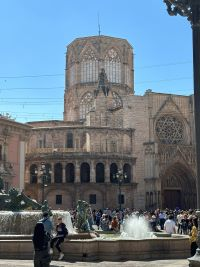
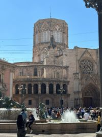

Malta: Uma joia do Mediterrâneo.
"Um arquipélago no meio do mediterrâneo com paisagens e histórias de tirar o folego Passamos 1 mês em Malta, nosso navio estava fazendo manutenção e nós ficamos por até o fim da grande reforma. Nesse 1 mês aprendemos muito sobre malta, um país que muitos nem conhecem. Malta tem paisagens de tirar o folego, como, por exemplo, a Blue Lagon:Mas também é cercada de histórias incríveis. Você pode encontrar castelos, fortalezas e até cidades inteiras da era medieval. Para os fãs de Game of Thrones, você encontra com facilidade na web pontos onde foram gravadas diversas cenas de GOT. Em malta se fala maltês, porém, a maior parte da população fala o inglês. Malta é um país barato, alguns dizem ser um paraíso fiscal, mas há controvérsias. Malta é um país, num geral, muito boêmio, mas quase tudo fecha cedo, então se quiser curtir a noite, vá para Sr. Julian's, o bairro mais badalado por lá, com diversas baladas e coisas para se fazer. "

Italia: Diversidade e história
"Melqui Arantes: Ufa! É de tirar o fôlego tanta beleza! Cinque Terre é um trecho de costa na Itália, famoso por suas cinco aldeias coloridas construídas. É um lugar mágico, com paisagens lindas e um mar cristalino. Nossa passagem foi por Monterosso, Vernazza e Corniglia. Fomos de trem de La Spezia, pagando cerca de 8 euros por pessoa e viajando por cerca de 45 minutos. O diferente é que o trem para diretamente nos pontos turísticos, sem estações. Não tivemos a oportunidade de experimentar a culinária local, pois achamos o lugar bem cheio, sendo pequeno. Então, caso decida ir, vá preparado para encontrar muitas pessoas. Melqui Arantes: Roma foi uma das experiências mais incríveis que já tivemos. Saímos de Civitavecchia, na Itália, e andamos cerca de 15 minutos até a estação, rumo ao nosso destino. Chegando lá, pegamos um patinete elétrico para correr contra o tempo. A sensação de estar tão perto do Coliseu era indescritível. A imensidão da arena e os detalhes da arquitetura nos deixaram maravilhado. Imaginei as milhares de pessoas que já passaram por ali e os espetáculos grandiosos que aconteceram naquele local. É incrível uma construção tão épica e cheia de histórias. Infelizmente, nosso tempo era curto, então não conseguimos entrar. Andamos ao redor, tiramos algumas fotos incríveis e depois fomos até a Fonte de Trevi jogar nossa moedinha "

Espanha: Latinos na Europa
"Melqui Arantes: Ufa! É de tirar o fôlego tanta beleza! Cinque Terre é um trecho de costa na Itália, famoso por suas cinco aldeias coloridas construídas. É um lugar mágico, com paisagens lindas e um mar cristalino. Nossa passagem foi por Monterosso, Vernazza e Corniglia. Fomos de trem de La Spezia, pagando cerca de 8 euros por pessoa e viajando por cerca de 45 minutos. O diferente é que o trem para diretamente nos pontos turísticos, sem estações. Não tivemos a oportunidade de experimentar a culinária local, pois achamos o lugar bem cheio, sendo pequeno. Então, caso decida ir, vá preparado para encontrar muitas pessoas. Melqui Arantes: Roma foi uma das experiências mais incríveis que já tivemos. Saímos de Civitavecchia, na Itália, e andamos cerca de 15 minutos até a estação, rumo ao nosso destino. Chegando lá, pegamos um patinete elétrico para correr contra o tempo. A sensação de estar tão perto do Coliseu era indescritível. A imensidão da arena e os detalhes da arquitetura nos deixaram maravilhado. Imaginei as milhares de pessoas que já passaram por ali e os espetáculos grandiosos que aconteceram naquele local. É incrível uma construção tão épica e cheia de histórias. Infelizmente, nosso tempo era curto, então não conseguimos entrar. Andamos ao redor, tiramos algumas fotos incríveis e depois fomos até a Fonte de Trevi jogar nossa moedinha "
 

- Malta
- Italia